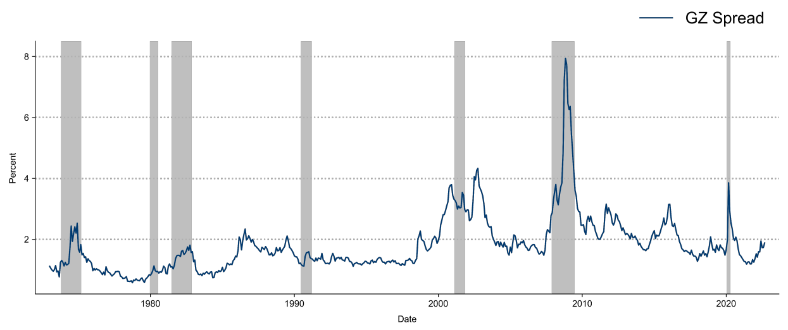

Macro II - Fluctuations - ENSAE, 2024-2025
2025-04-02
Ben Bernanke
Credit markets are crucial to understand:
External Finance Premium
All-in cost of a loan for a given borrower (including costs created by covenants and collateral requirements, etc.), less the safe rate of interest (for example, yields on government securities).
A key insight from the literature on financial intermediation
Financial accelerator1:

i::: {.incremental}
:::
I consider a discrete-time economy.
The economy features three agents: households, bankers, and entrepreneurs. Each agent has a unit mass.
Households work, consume and buy real estate, and make one-period deposits into a bank. The household sector in the aggregate is net saver.
Entrepreneurs accumulate real estate, hire households, and borrow from banks.
In between the households and the entrepreneurs, bankers intermediate funds. The nature of the banking activity implies that bankers are borrowers when it comes to their relationship with households, and are lenders when it comes to their relationship with the credit-dependent sector – the entrepreneurs.
I design preferences in a way that two frictions coexist and interact in the model’s equilibrium: first, bankers are credit constrained in how much they can borrow from the patient savers; second, entrepreneurs are credit constrained in how much they can borrow from bankers.
I consider a discrete-time economy.
The economy features three agents: households, bankers, and entrepreneurs. Each agent has a unit mass.
Households work, consume and buy real estate, and make one-period deposits into a bank. The household sector in the aggregate is net saver.
Entrepreneurs accumulate real estate, hire households, and borrow from banks.
In between the households and the entrepreneurs, bankers intermediate funds. The nature of the banking activity implies that bankers are borrowers when it comes to their relationship with households, and are lenders when it comes to their relationship with the credit-dependent sector – the entrepreneurs.
I design preferences in a way that two frictions coexist and interact in the model’s equilibrium: first, bankers are credit constrained in how much they can borrow from the patient savers; second, entrepreneurs are credit constrained in how much they can borrow from bankers.
Representative agent chooses housing \(H_{H,t}\), consumption \(C_{T,t}\) and time spent working \(N_{H,t}\) to solve
\[\max E_t \sum_{t=0}^{\infty} \beta^t_H \left( \log C_{H,t} + j \log H_{H,t} + \tau \log(1-N_{H,t}) \right)\]
where \(\beta_{H,t}\) is the discount factor and \(j,\tau\) two preference parameters.
subject to the Budget constraint:
\[C_{H,t} + D_t + q_t \left( H_{H,t}- H_{H,t-1} \right) = R_{H,t-1} D_{t-1} + W_{H,t} N_{H,t} + \epsilon_t\]
where:
Representative agent chooses housing \(H_{H,t}\), consumption \(C_{T,t}\) and time spent working \(N_{H,t}\) to solve
\[\max E_t \sum_{t=0}^{\infty} \beta^t_H \left( \log C_{H,t} + j \log H_{H,t} + \tau \log(1-N_{H,t}) \right)\]
where \(\beta_{H,t}\) is the discount factor and \(j,\tau\) two preference parameters.
subject to the Budget constraint:
\[C_{H,t} + D_t + q_t \left( H_{H,t}- H_{H,t-1} \right) = R_{H,t-1} D_{t-1} + W_{H,t} N_{H,t} + \epsilon_t\]
where:
We can derive the following optimality conditions:
\[\frac{1}{C_{H,t}} = \beta_H E_t \left( \frac{1}{C_{H,t+1}} R_{H,t} \right)\] \[\frac{q_t}{C_{H,t}} = \frac{j}{H_{H,t}} + \beta_H E_t \left( \frac{q_{t+1}}{C_{H,t+1}} \right)\] \[\frac{W_{H,t}}{C_{H,t}} = \frac{\tau}{1-N_{H,t}}\]
The representative entrepreneur chooses consumption \(C_{E,t}\), housing \(H_{H,t}\), production \(Y_t\), worker’s time \(N_{H,t}\) \[\max E_0 \sum_{t=0}^{\infty} \beta^t_E \log C_{E,t}\]
subject to:
\[C_{E,t} + q_t \left( H_{E,t} - H_{E,t-1} \right) + R_{E,t} L_{E,t-1} + W_{H,t} N_{H,t} + a c_{EE,t} = Y_t + L_{E,t}\]
\[Y_t = H^{\nu}_{E,t-1} N^{1-\nu}_{H,t}\]
\[ L_{E,t} \leq m_H E_t \left( \frac{q_{t+1}}{R_{E,t+1}}H_{E,t} \right) - m_N W_{H,t} N_{H,t} \qquad(1)\]
\(L_{E,t}\) are loans to the entrepreneur with gross return \(R_{E,t}\)
\(c_{EE,t}=\frac{\phi_{EE}}{2}\frac{\left(L_{E,t}-L_{E,t-1}\right)}{L_E}\) with \(L_E\) the steady-state of \(L_{E,t}\) 1
Borrowing constraint:
\[ L_{E,t} \leq m_H E_t \left( \frac{q_{t+1}}{R_{E,t+1}}H_{E,t} \right) - m_N W_{H,t} N_{H,t} \qquad(2)\]
Assumption: entrepreneurs discount future more than housholds and bankers
\[\beta_E < \frac{1}{\gamma_E \frac{1}{\beta_H} + (1-\gamma_E)\frac{1}{\beta_B}}\] with \(\gamma_E\in[0,1]\)
We get the following optimality conditions
\[\left( 1- \lambda_{E,t} - \frac{\partial ac_{LE,t}}{\partial L_{E,t}}\right) \frac{1}{c_{E,t}} = \beta_E E_t \left( R_{E,t+1} \frac{1}{c_{E,t+11}}\right)\]
\[\left( q_t- \lambda_{E,t} m_H E_t \left( \frac{q_{t+1}}{R_{E,t+1}} \right) \right)\frac{1}{c_{E,t}} = \beta_E E_t \left( \left(q_{t+1} + \frac{\nu Y_{t+1}}{H_{E,t}} \right) \frac{1}{c_{E,t+1}}\right) \]
\[\frac{(1-\nu)Y_t}{1+m_N \lambda_{E,t}}=W_{H,t} N_{H,t}\]
Comment: credit constraint introduces a wedge between the cost of factors and their marginal product.
The representative banker maximizes private consumption \(C_{B,t}\)
\[\max E_0 \sum_{t=0}^{\infty} \beta^t_B \log C_{B,t}\]
\[C_{B,t} + R_{H,t-1} D_{t-1} + L_{E,t} + a c_{EB,t} = D_t + R_{E,t} L_{E,t-1} - \epsilon_t\]
where:
\(D_t\): households deposits
\(L_{E,t}\): loans to entrepreneurs
\(a c_{EB,t} = \frac{\phi_{EB}}{2} \frac{(L_{E,t-L_{E,t-1}})^2}{L_E}\) is quadratic adjustment cost1
the ability to convert deposits into loans is limited by a borrowing constraint2
\[D_t \leq \gamma_E \left( L_{E,t} - E_t \epsilon_{t+1} \right)\]
Denote:
Optimality conditions:
\[1-\lambda_{B,t} = E_t \left( m_{B,t} R_{H,t} \right) \qquad(3)\]
\[1-\gamma_{E} \lambda_{B,t} + \frac{\partial ac_{EB,t}}{\partial L_{E,t}} = E_t \left( m_{B,t} R_{E,t+1} \right) \qquad(4)\]
These two equations explain the spread between the deposit rate and the lending rate (aka the intermediation premium)
\[1-\lambda_{B,t} = E_t \left( m_{B,t} R_{H,t} \right)\]
\[1-\gamma_{E} \lambda_{B,t} + \frac{\partial ac_{EB,t}}{\partial L_{E,t}} = E_t \left( m_{B,t} R_{E,t+1} \right)\]
Interpretation:
Total supply of housing \(H_{E,t} + H_{H,t} = 1\)
Market clearing conditions for goods and housing:
\[H_{E,t} + H_{H,t} = 1\]
For the household:
\[R_H=\frac{1}{\beta_H}\]
For the banker:
Equation 3 and Equation 4 imply that as long as \(\beta_B<\beta_H\), the bankers are credit constrained
With \(\gamma_{E}\) smaller than one, there is a spread between return on loans and return on deposits:
\[\lambda_B = 1-\beta_B R_H = 1-\frac{\beta_B}{\beta_H}>0\]
\[R_E = \frac{1}{\beta_B} - \gamma_E \left( \frac{1}{\beta_B} - \frac{1}{\beta_H} \right)>R_H\]
For entrepreneurs
Entrepreneurs are constrained if \(\beta_E R_E<1\). that is equivalent to \[\frac{1}{\beta_E}=\gamma_E \frac{1}{\beta_H} + (1-\gamma_E) \frac{1}{\beta_B}\]
Effect:
Technical assumption: at the steady-state, constraints are binding. Iacoviello assume there remain binding in a neighborhood of the steady-state.
Time period: 1 quarter
Time discounts:
Choice of leverage parameters such that \(R_H=3%\) and \(R_E=5%\).
Adjustment costs: \(\phi_{EE}=\phi_{EB}=0.25\)
Weight of leisure in utility: \(\tau=2\) (active time spent=1/2 and Frisch elasticity1 close to 1).
Share of housing in production: \(\nu=0.05\)
Preference parameter for housing \(j=0.075\): ratio of real estate wealth to output 3.1 (0.8 commercial, 2.3 residential)
Leverage:
Dynamics of intermediation spread
\[E_t \left( R_{E,t+1} \right) - R_H,t = \frac{\lambda_{B,t}}{m_{B,t}}(1-\gamma_E)\]
Shock \(\epsilon_t\) is calibrated on historical loan losses (amounts of debt writedowns)
Follows \[\epsilon_t = 0.9 \epsilon_{t-1} + \iota_t\]
The exogenous deviation is the following
The full model contains:
Model estimated with a bayesian approach from 1985 to 2010 - 8 shocks in total - 8 observable variables
An estimated model can be used to identify shocks.
The model predicts other moments that were not targeted:
The FBC model shows that financial shocks were likely a driver of the financial crisis (🤔)
But it is missing: